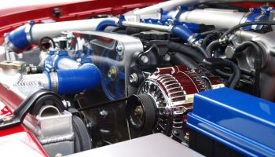

آنچه باید در مورد احتراق ناقص (خامسوزی) موتور خودرو بدانید
احتراق ناقص موتور
خام سوزی سوخت یا احتراق ناقص موتور می تواند یک مشکل مرموز باشد ومعمولاً باعث می شود که اتومبیلها از آنچه که هستند بدتر شوند. علائم از نظر وسایل نقلیه متفاوت هستند اما معمولاً به عنوان ریپ زدن در تأمین انرژی توصیف می شود.خامسوزی میتواند موقتی یا مستمر باشد و گاهی یک هشدار چک موتور می دهد. اما نگران نباشید. اگرچه به نظر می رسد که یک مشکل بزرگ است ، اما معمولاً اینگونه نیست.
احتراق ناقص چیست؟
اول ، بیایید بررسی کنیم که چه عواملی باعث خامسوزی میشود. قبلاً می دانید که موتور برای آتش گرفتن سیلندر به سه مؤلفه نیاز دارد: سوخت برای احتراق ، اکسیژن برای سوختن آن سوخت و جرقه ای برای اشتعال این مخلوط. اگر هر یک از این عناصر را از بین ببرید ، سیلندر انفجار مورد انتظار را تولید نمی کند. اما سایر علل همچون زمان بندی نادرست احتراق ، نشت خلاء یا سایش فنر سوپاپ نیز میتوانند جزء احتمالات باشند.اگر کارایی موتور شما ناامیدکننده است ، بهتر است مشکل را پیدا کرده و در اسرع وقت آن را برطرف کنید. نارسایی ها مسافت پیموده شده را کاهش داده و میزان انتشار گازهای گلخانه ای را افزایش می دهد . به طور جدی تر ، عدم عمل صحیح سیلندر می تواند باعث آسیب دیدن سایر قطعات موتور ، مانند سنسورهای اکسیژن یا مبدل کاتالیزوری شود.
شمع
قطعات احتراقی که کنترل جرقه را به موتور می دهند در درجه اول قطعات مصرفی هستند که به منظور ارائه حداکثر کارایی در طول عمر خود طراحی شده اند و در صورت نیاز تعویض می شوند. با استهلاک یا خوردگی این قطعات ، آنها به تدریج مقاومت امپدانس را افزایش می دهند تا جایی که برق یا کمبود آن باعث می شود تا به شعله جرقه تبدیل شود. از آنجا که این اتفاق با گذشت زمان رخ می دهد ، ممکن است در ابتدا دچار ضعف های متناوب شوید که حتی متوجه نمی شوید که به تدریج با گذشت زمان بدتر می شوند. این یک سرنخ بزرگ است که باعث نارضایتی شما در سیستم جرقه زنی می شود ، بنابراین از آنجا شروع کنید. خوشبختانه ، اکثر این موارد مقرون به صرفه بوده و به راحتی جایگزین آنها سریع می شود.
شمع های جرقه ارزان هستند و به راحتی در عرض چند دقیقه تعویض می شوند. سیم های اشتعال (وایر) علائم سایش را نشان می دهند و همچنین قابل تعویض هستند.

سوخت
پس از بررسی سیستم جرقه زنی ، به سیستم سوخت بروید. قطعات در اینجا به طور معمول دوام بیشتری دارند اما فرسوده میشوند شاید فقط فیلتر سوخت مسدود شده باشد ، یا انژکتورهای سوخت کثیف هستند. اگر این موارد خوب باشند ، پمپ سوخت یا سنسور جریان هوا می تواند در حال از بین رفتن باشد.علائم ناخوشایند سیستم سوخت ناگهان ظاهر می شوند و اغلب در حالت توقف قابل توجه هستند.

مکانیکی
ضعف موتور نیز می تواند کمی پیچیده تر باشد. خطوط خلاء متصل به منیفولد ورودی را بررسی کنید. در صورت بروز هر مشکلی به دنبال ترک و تعویض خطوط باشید.
برخلاف علائم سوء مصرف سوخت ، علائم ناپایداری مکانیکی با سرعت بالاتر موتور از بین نمی رود و اغلب بدتر می شوند. خامسوزی میتواند به اندازه کافی جدی باشد که باعث ایجاد لرزش قابل توجه در داخل کابین یا حتی آتش سوزی شود. در این مرحله ، موتور شما باید یک کد را نشان دهد.
چراغ ENGINE را بررسی کنید اگر شما یک چراغ (Check Engine) دارید ، کامپیوتر شما اطلاعاتی را در مورد مشکل تشخیص داده شده ذخیره می کند. نکته جالب در مورد کدهای تشخیصی این است که آنها می توانند بسیار خاص باشند ، حتی اغلب عمیق می شوند که کدام سیلندر دارای مشکل است .